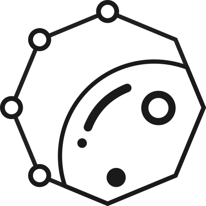

We are a young focus group, working on exploring the efficacy of data analytic methods in solving problems in astronomy. Our initiative is supported by the Bangalore Section of IEEE Computer Society.
We are a group of astrophysicists and computer scientists. We want to explore the efficacy of data science methods, developed in tandem with their proper physical interpretations, to address large scale problems in astronomy. Astronomy and astrophysics are becoming increasingly data intensive with more and more telescopes and satellites being launched. In all this, it is necessary to bring together methods which can address these problems at scale, by retaining the physical essence.
Our logo comprises of an octagon with data points on four of its vertices and the remaining four vertices near the section of the planet within. This is a portrayal of an interplay between modern computational methods and traditional thoughts of astrophysics. Within the planet, there's another data point, portrayed as a crater, which indicates an overlap of the two domains of science.